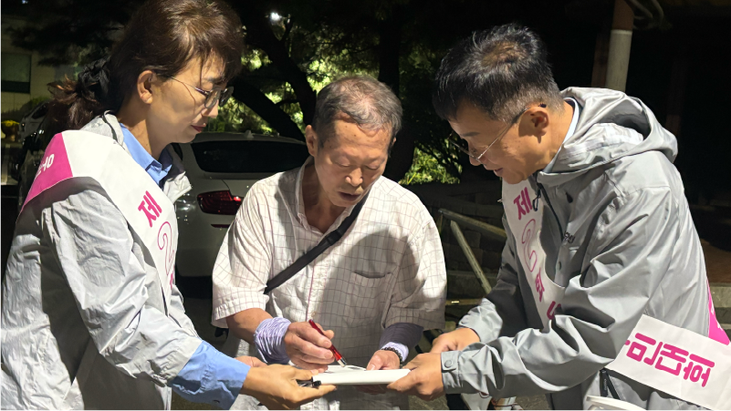
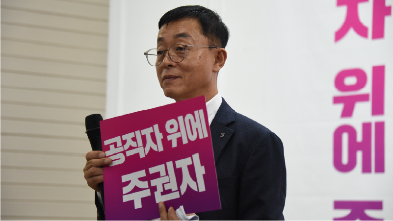
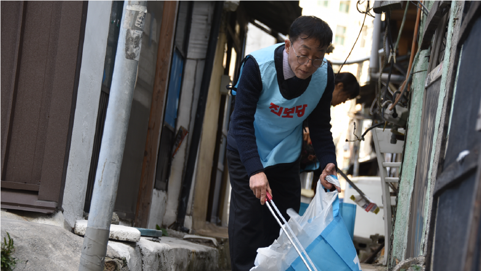
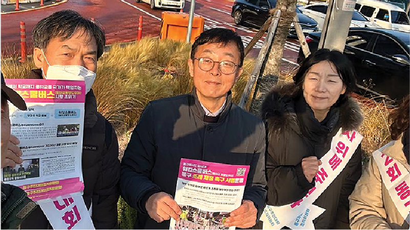
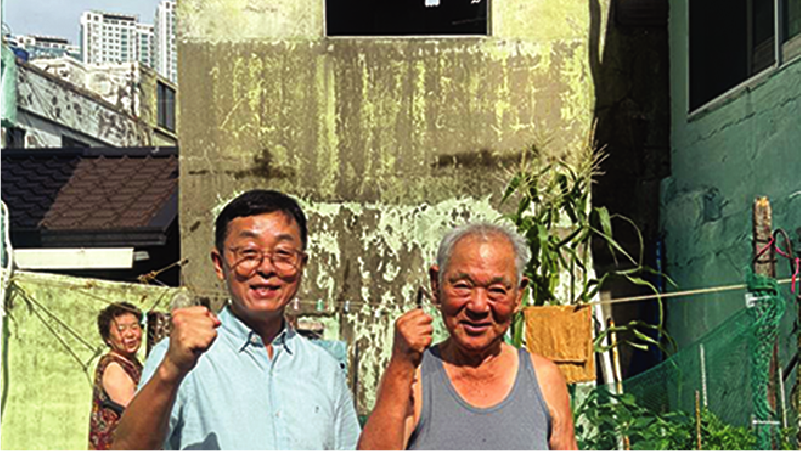
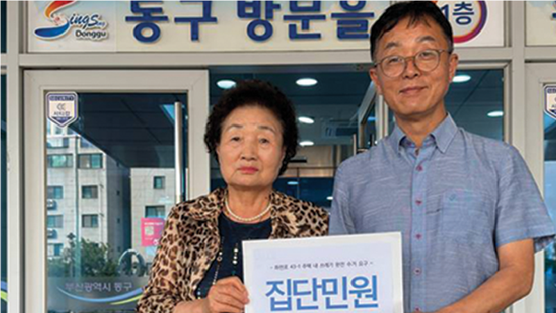
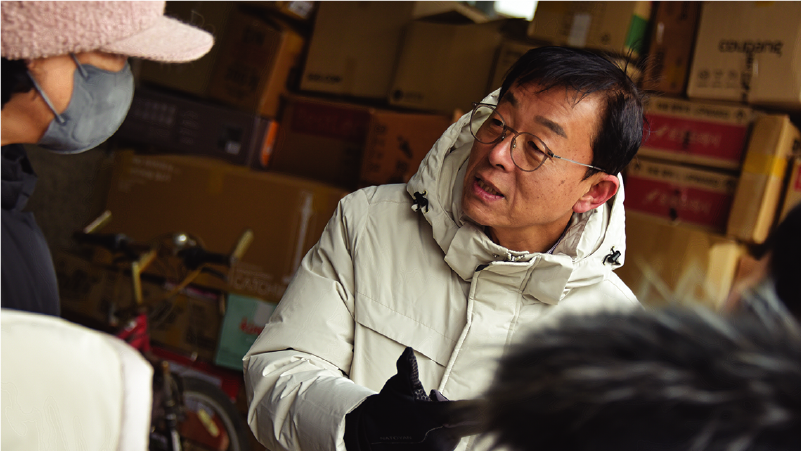

범일동·좌천동·수정5동 구의원 후보
주민에게 빚져야 주민께 봉사로 갚습니다. 10만원까지는 연말정산 시 전액 돌려받습니다. 범일동·좌천동·수정5동 주민의 후원이 간절합니다.
예금주 : 고창식후원회(동구의원선거)
구의원은 동네 심부름꾼입니다.
봉사일꾼뽑는 선거입니다.
가장 열심히 하고 부지런한 사람,
동구 일할 사람 고창식 입니다.


1회·2회 동구주민대회를 통해
정책제안 2,158명, 주민투표 7,076명
총 9,234명의 주민을 만나며
동구주민요구안을 만들었습니다.
직접 발로 뛰면서 모아낸 소중한 민원들,
구의원 고창식이 1순위로 추진하겠습니다
크고 작은 불편으로 민원이 생겼을 때,
과연 주민 곁에 누가 있었나요?
고창식이 바로 달려가겠습니다!





1,2회 동구주민대회 주민투표 활동
1,2회 동구주민대회 위원장 역임